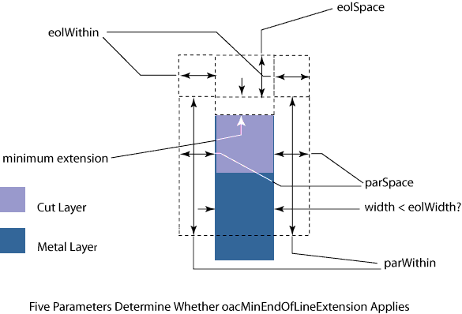
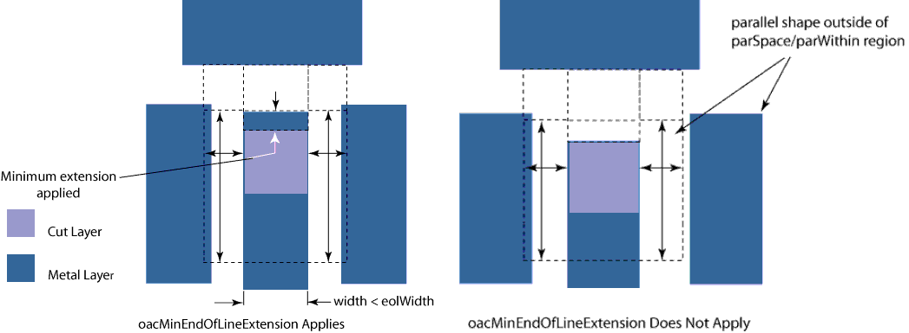

|
 |
 |
||||||
|
|
|
||||||
The built-in layer pair constraint, oacMinEndOfLineExtension, specifies the minimum extension of wire on a metal layer with respect to a cut layer when the wire has adjacent, parallel edges on three sides within the specified regions. If this constraint is not specified, or if it is specified but there are no parallel edges on three sides within the specified regions, a wire is extended beyond a cut shape dependent only on the oacMinExtension constraint.
Important differences between oacMinEndOfLineExtension and oacMinExtension are:
When using the oacMinEndOfLineExtension constraint, you might want to specify two constraints: one for the minimum extension on the metal layer above the cut layer, the second for the minimum extension on the metal layer below the cut layer.
| Constraint type: | oaLayerPairConstraint (Symmetric: no) |
| Value types: | oaIntValue |
| Database types: | oaDesign, oaTech |
| Object types: | oaAppObject |
The following value types are supported by this constraint:
This parameter specifies the minimum end-of-line extension that must be added when adjacent shapes satisfy the criteria defined by the following parameters described below.
Units: DBU
The following parameters are supported by this constraint:
| Name | Value Type | Units | Default | Description |
|---|---|---|---|---|
| width oacWidthConstraintParamType |
oaIntValue | DBU | (Required) |
A parameter of type oacWidthConstraintParamType specifies the end-of-line width (eolWidth). The constraint applies if the wire width is less than this value. The value type of this parameter is oaIntValue. |
| endOfLineSpace oacEndOfLineSpaceConstraintParamType |
oaIntValue | DBU | (Required) |
A parameter of type oacEndOfLineSpaceConstraintParamType specifies end-of-line spacing (eolSpace). The value type of this parameter is oaIntValue. Combined with eolWithin, the two parameters define what is called the lateral verification region. |
| distance oacDistanceConstraintParamType |
oaIntValue | DBU | (Required) |
A parameter of type oacDistanceConstraintParamType specifies the verification distance for the end-of-line within (eolWithin) distance. This together with the eolSpace parameter defines the lateral verification region. This constraint applies, if there is a parallel edge in the lateral verification region in addition to two parallel edges in the region defined by the parSpace and parWithin parameters described next. The value type of this parameter is oaIntValue. |
| parallelEdgeSpace oacParallelEdgeSpaceConstraintParamType |
oaIntValue | DBU | (Required) |
A parameter of type oacParallelEdgeSpaceConstraintParamType specifies the distance perpendicular to a wire, which is represented as parallel space (parSpace). Parallel wires must lie within this distance on both sides of the end-of-line in order for this constraint to apply. The value type of this parameter is oaIntValue. |
| parallelEdgeWithin oacParallelEdgeWithinConstraintParamType |
oaIntValue | DBU | (Required) |
A parameter of type oacParallelEdgeWithinConstraintParamtype specifies the distance (parWithin) within which parallel wires are evaluated. If there are parallel wires within this distance on both sides of the wire, the constraint applies. The value type of this parameter is oaIntValue. |


Copyright 2002 - 2010 Cadence Design Systems, Inc.
All rights reserved.